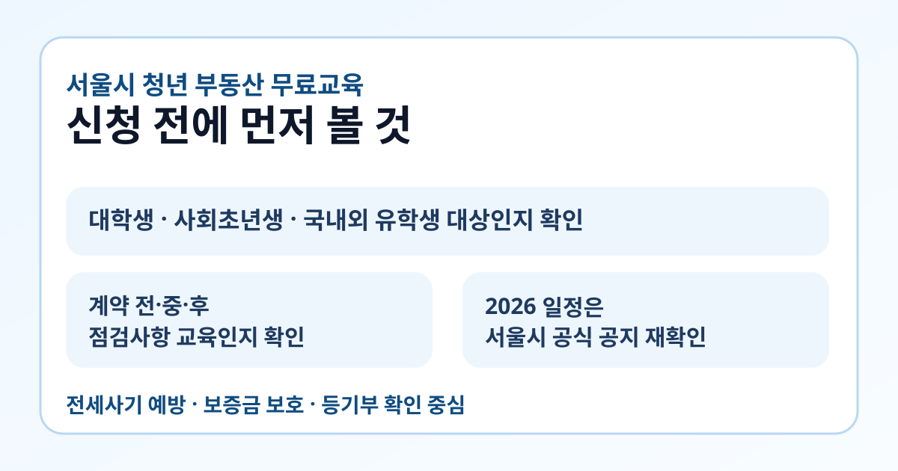

서울시 청년 부동산 무료교육을 찾는 분들이 지금 가장 먼저 확인해야 하는 것은 2026년 일정이 이미 열렸는지, 그리고 내가 이 교육에서 실제로 얻고 싶은 것이 무엇인지입니다. 전월세 계약은 체크해야 할 항목이 많아서, 무료 교육이 있다면 언제 신청이 열리는지부터 아는 것이 중요합니다.
이 글은 서울시 공식 교육 안내 보도자료와 서울시 정책 페이지를 바탕으로 정리했습니다. 2026년 3월 21일 현재 확인 가능한 공식 자료는 2025년 운영 내용과 2026년 권역별 확대 계획 중심이므로, 실제 신청 전에는 최신 공지와 접수 페이지를 다시 확인하세요.

현재 공식 자료에서 확인되는 큰 흐름
서울시 공식 정책 페이지에는 2025년 10월 2일부터 12월 9일까지 총 4회차 교육을 운영했고, 대상은 대학생, 사회초년생, 국내외 유학생이라고 적혀 있습니다. 같은 페이지에는 계약 전·중·후 단계별 점검사항, 전세사기 예방, 보증금 미반환 대비 같은 실무 중심 내용이 안내돼 있습니다.
또 서울시 정책 페이지는 2026년에는 권역별로 자치구와 협력해 현장 방문 및 상담 중심으로 확대하고, 주말·야간 교육 신설을 계획한다고 설명합니다. 즉, 지금 검색 수요는 단순 후기보다 내년에는 더 자주 열릴 가능성을 보고 움직이는 수요에 가깝습니다.
어떤 사람이 이 교육을 먼저 봐야 하나요?
- 첫 전월세 계약을 앞둔 대학생
- 사회초년생이라 계약 절차가 익숙하지 않은 경우
- 국내외 유학생이라 계약 구조가 낯선 경우
- 전세사기 예방, 보증보험, 등기부 확인이 막막한 경우
서울시 공식 자료가 반복해서 강조하는 부분도 같습니다. 단순한 이론 강의보다 실제 계약 단계에서 무엇을 확인해야 하는지를 알려주는 교육이라서, “계약을 곧 해야 하는 사람”일수록 체감이 큽니다.
교육에서 무엇을 배우나요?
서울시 정책 페이지 기준으로 교육 내용은 계약 단계에 따라 나뉩니다.
- 계약 전: 시세 확인, 등기부 확인, 위험 요소 점검
- 계약 중: 자금 이동 시 계좌이체 권장, 실제 계약서 점검
- 계약 후: 전입신고, 확정일자, 보증보험, 기존 권리관계 확인
특히 보증금 미반환 피해를 막기 위한 보증보험 가입 여부, 등기부등본상 근저당·가압류 확인 같은 실무형 내용이 포함돼 있어, 검색만으로 정리하기 어려운 부분을 한 번에 듣기 좋습니다.
2026 일정은 어떻게 확인하면 되나요?
2026년 3월 21일 현재 제가 확인한 공식 자료에는 2026 접수 일정이 아직 공개되지 않았습니다. 대신 서울시는 정책 페이지에서 권역별 확대와 주말·야간 신설 계획을 공식적으로 밝히고 있습니다.
따라서 가장 안전한 확인 순서는 아래와 같습니다.
- 서울시 주택 관련 보도자료에서 새 공지가 올라왔는지 확인
- 서울시 정책 페이지에서 후속 안내가 붙었는지 확인
- 신청 링크가 별도 열렸는지 확인
- 회차별 장소와 시간, 특히 주말·야간 여부 확인
검색 결과에서 예전 회차 포스터를 봤더라도, 실제 신청은 회차별 일정과 접수 링크가 다시 열려야 가능하다고 보는 편이 맞습니다.
신청 전에 체크하면 좋은 것
- 내가 원하는 게 전세사기 예방인지, 기본 계약 절차인지 정리하기
- 주중만 가능한지, 주말·야간도 가능한지 확인하기
- 현재 전월세 계약이 임박했는지, 미리 공부하려는지 구분하기
- 등기부, 확정일자, 보증보험처럼 특히 약한 부분을 메모해 두기
이 교육은 “무료라서 일단 신청”보다 내가 무엇을 모르고 있는지를 정리해두면 훨씬 효율적입니다. 실제 계약을 앞둔 분이라면 질문거리를 미리 적어가는 편이 좋습니다.
한 번에 요약하면
- 서울시 공식 자료 기준 청년 맞춤형 부동산 교육은 대학생, 사회초년생, 국내외 유학생을 주요 대상으로 운영됐습니다
- 핵심 내용은 계약 전·중·후 점검사항과 전세사기 예방입니다
- 서울시는 공식 정책 페이지에서 2026년 권역별 확대와 주말·야간 신설 계획을 밝혔습니다
- 다만 2026년 3월 21일 현재 새 접수 일정은 공식 공지 재확인이 필요합니다
- 신청 전에는 서울시 보도자료와 정책 페이지를 함께 확인하는 편이 가장 안전합니다
자주 묻는 질문
Q. 2026년 교육 신청이 지금 바로 열려 있나요?
2026년 3월 21일 현재 제가 확인한 공식 자료에는 새 접수 일정이 아직 보이지 않습니다. 최신 공지가 올라왔는지 서울시 공식 페이지를 다시 확인하세요.
Q. 어떤 내용을 가장 많이 다루나요?
서울시 정책 페이지 기준으로 계약 전·중·후 점검사항, 전세사기 예방, 보증보험과 등기부 확인 같은 실무 내용이 핵심입니다.
Q. 부동산 계약 경험이 전혀 없어도 들어도 되나요?
오히려 그런 경우에 더 적합합니다. 대상 자체가 대학생, 사회초년생, 유학생 등 초보 수요에 맞춰져 있습니다.
공식 링크
교육 일정과 접수 링크는 회차별로 달라질 수 있습니다. 실제 신청 전에는 위 공식 페이지에서 최신 일정, 장소, 접수 방식을 다시 확인하세요.